我们在第11.6节讲过，函数的调用者和实现者之间订立了一个契约，在调用函数之前，调用者要为实现者提供某些条件，在函数返回时，实现者要对调用者尽到某些义务。如何描述这个契约呢？首先靠函数接口来描述，即函数名，参数，返回值，只要函数和参数的名字起得合理，参数和返回值的类型定得准确，这个函数该怎么用程序员单看函数接口就能猜出八九分了。然而函数接口并不能表达函数的全部语义，这时文档就起了重要的补充作用，函数的文档该写什么，怎么写，Man Page为我们做了很好的榜样。
函数接口一旦和指针结合起来就变得异常灵活，有五花八门的用法，但是万变不离其宗，只要像图22.1那样画图分析，指针的任何用法都能分析清楚，所以，如果上一章你真正学明白了，本章不用学也能自己领悟出来。
这一节介绍本章的范例代码要用的几个C标准库函数。我们先体会一下这几个函数的接口是怎么设计的，Man Page是怎么写的。其他常用的C标准库函数将在下一章介绍。
23.1.1 strcpy与strncpy
从现在开始我们的程序中要用到很多库函数，在学习每个库函数时一定要看Man Page。Man Page随时都在我们手边，想查什么只要敲一个命令就能查，然而很多初学者就是不喜欢看Man Page，宁可满世界去查书、查资料，也不愿意看Man Page。据我分析原因有三：
1．英文不好。那还是先学好了英文再学编程吧，否则即使你把这本书都学透了也一样无法胜任开发工作，因为你没有进一步学习的能力。
2．Man Page的语言不够友好。Man Page不像本书这样由浅入深地讲解，而是平铺直叙，不过看习惯了就好了，每个Man Page都不长，多看几遍自然可以抓住重点，理清头绪。本节分析一个例子，帮助读者把握Man Page的语言特点。
3．Man Page通常没有例子。描述一个函数怎么用，一靠接口，二靠文档，而不是靠例子。函数的用法无非是本章所总结的几种模式，只要把本章学透了，你就不需要每个函数都得有个例子教你怎么用了。
总之，Man Page是一定要看的，一开始看不懂硬着头皮也要看，为了逼迫读者去看Man Page而不是查书，本书不会像参考文献[3]那样把库函数总结成一个附录放在书后面。现在我们来分析strcpy(3)。
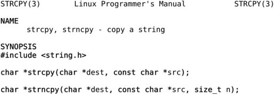
这个Man Page描述了两个函数，strcpy和strncpy，敲命令man strcpy或者man strncpy都可以看到这个Man Page。这两个函数的作用是把一个字符串拷贝给另一个字符串。SYNOPSIS部分给出了这两个函数的原型，以及要用这些函数需要包含哪些头文件。参数dest、src和n都加了下划线，有时候并不想从头到尾阅读整个Man Page，而是想查一下某个参数的含义，通过下划线和参数名就能很快找到你关心的部分。
dest表示Destination，src表示Source，看名字就能猜到是把src所指向的字符串拷贝到dest所指向的内存空间。这一点从两个参数的类型也能看出来，dest是char*型的，而src是const char *型的，说明src所指向的内存空间在函数中只能读不能改写，而dest所指向的内存空间在函数中是要改写的，改写的目的是当函数返回后调用者可以读取改写的结果。因此可以猜到strcpy函数是这样用的：
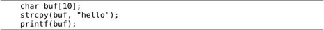
至于strncpy的参数n是干什么用的，单从函数接口猜不出来，就需要看下面的文档。
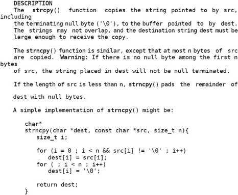
在文档中强调了strcpy在拷贝字符串时会把结尾的'\0'也拷到dest中，因此保证了dest是以Null结尾的字符串。但这样做存在一个问题，strcpy只知道src字符串的首地址，不知道长度，它会一直拷贝到'\0'为止，因此dest所指向的内存空间要足够大，否则有可能写越界，例如：
如果不保证src所指向的内存空间以'\0'结尾，也有可能读越界，例如：
因为strcpy函数的实现者通过函数接口无法得知src字符串的长度和dest内存空间的大小，所以“确保不会写越界”应该是调用者的责任，调用者提供的dest参数应该指向足够大的内存空间，“确保不会读越界”也是调用者的责任，调用者提供的src参数指向的内存空间应该确保以'\0'结尾。
此外，文档中还强调了src和dest所指向的内存空间不能有重叠，例如这样调用是不允许的：
凡是有指针参数的C标准库函数基本上都有这条要求，也有个别函数例外，下一章会讲到这样的函数。strncpy的参数n指定最多从src中拷贝n个字节到dest中，换句话说，如果拷贝到'\0'就结束，如果拷贝到n个字节还没有碰到'\0'，那么也结束。如果调用者不能确定src字符串的长度，可以规定一个适当的n值，以确保读写不会越界，通常让n的值等于dest所指向的内存空间的大小：
这样做也存在一个问题，文档中特别用Warning指出，这意味着dest有可能不是以'\0'结尾的。例如上面的调用，虽然把"hello world"截断为10个字符拷贝到buf中，但buf不是以'\0'结尾的，如果再printf(buf)就会读越界。如果你需要确保dest以'\0'结尾，可以这么调用：
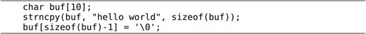
strncpy还有一个特性，如果src字符串全部拷完了不足n个字节，那么还差多少个字节就补多少个'\0'，但是正如上面所述，这并不保证dest一定以'\0'结尾，当src字符串的长度大于n时，不但不补多余的'\0'，连字符串结尾的'\0'也没有。strcpy(3)的文档已经相当友好了，为了帮助理解，还给出一个strncpy的简单实现。
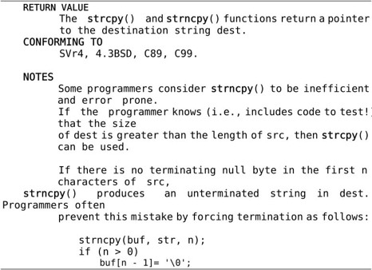
函数的Man Page都会有一个RETURN VALUE部分专门讲返回值，这两个函数的返回值都是dest指针。可是为什么要返回dest指针呢？dest指针本来就是调用者传过去的，再返回一遍dest指针并没有提供任何有用的信息。之所以这么规定是为了把函数调用当做一个指针类型的表达式使用，比如printf("%s\n", strcpy(buf,"hello"))，一举两得，如果strcpy的返回值是void就没有这么方便了。
CONFORMING TO部分描述了这个函数是遵照哪些标准实现的。strcpy和strncpy是C标准库函数，当然遵照C99标准。在第18.2节讲过libc中的有些函数属于POSIX标准但并不属于C标准，例如_exit(2)。
NOTES部分给出一些提示信息。这里指出如何确保strncpy的dest以'\0'结尾，和我们上面给出的代码类似，但这段代码比较谨慎，由于n是个变量，在执行buf[n- 1]= '\0';之前先检查一下n是否大于0，如果n不大于0，buf[n - 1]就访问越界了，所以要避免。
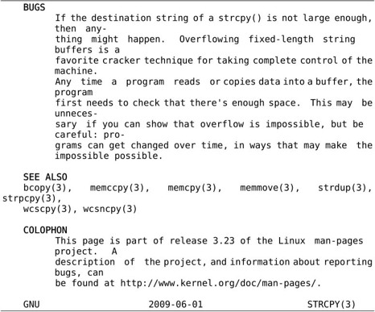
BUGS部分说明了使用这些函数可能引起的Bug，这部分一定要仔细看。用strcpy比用strncpy更加不安全，如果在调用strcpy之前不仔细检查src字符串的长度就有可能写越界，这是一个很常见的错误，例如：
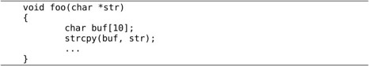
str所指向的字符串有可能超过10个字符而导致写越界，在第10.4节我们看到过，这种写越界有可能当时不出错，而在函数返回时出现段错误，原因是写越界覆盖了保存在栈帧上的返回地址，函数返回时跳转到非法地址，因而出错。像buf这种由调用者分配并传给strcpy函数访问的一段内存通常称为缓冲区（Buffer），缓冲区写越界的错误称为缓冲区溢出（Buffer Overflow）。如果只是出现段错误那还不算严重，更严重的是缓冲区溢出Bug经常被恶意用户利用，使函数返回时跳转到一个事先设计好的地址，执行一段事先设计好的指令，如果设计得巧妙甚至可以启动一个Shell，然后随心所欲执行任何命令，可想而知，如果一个用root权限执行的程序存在这样的Bug，被攻陷了，后果将很严重。至于怎样巧妙设计和攻陷一个存在缓冲区溢出问题的程序，感兴趣的读者可以查阅参考文献[28]。
1．自己实现一个strcpy函数，尽可能简洁，按照本书的编码风格你能用三行代码写出函数体吗？
2．编一个函数，输入一个字符串，要求做一个新字符串，把其中所有的一个或多个连续空白字符都压缩成一个空格。这里所说的空白字符包括空格、'\t'、'\n'、'\r'。例如原来的字符串是：
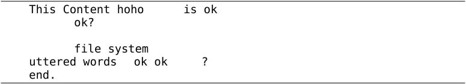
压缩空白之后就是：
实现该功能的函数接口要求符合下述规范：
各项参数和返回值的含义和strncpy类似。完成之后，为自己实现的函数写一个Man Page。
23.1.2 malloc与free
程序中需要动态分配一块内存时怎么办呢？可以像上一节那样定义一个缓冲区数组。这种方法不够灵活，C89要求定义的数组是固定长度的，而程序往往在运行时才知道要动态分配多大的内存，例如：
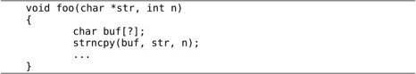
n是由参数传进来的，事先不知道是多少，那么buf该定义多大呢？在第8.1节讲过C99引入VLA特性，可以定义char buf[n+1] = {0};，这样可以确保buf是以'\0'结尾的。但即使用VLA仍然不够灵活，VLA是在栈上分配的，函数返回时就要释放，如果我们希望动态分配一块全局的内存空间，在各函数中都可以访问，该怎么办呢？由于全局数组无法定义成VLA，所以仍然不能满足要求。
在第19.5节提过，每个进程都有一个堆空间，C标准库函数malloc可以在堆空间动态分配内存，它的底层通过brk系统调用向操作系统申请内存。动态分配的内存用完之后可以用free释放，更准确地说是归还给了malloc，下次调用malloc时这块内存可以再次分配出来。本节学习这两个函数的用法和工作原理。
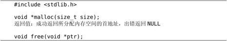
malloc的参数size表示要分配的字节数，如果分配失败（可能是因为系统内存耗尽）则返回NULL。由于malloc函数不知道用户拿到这块内存要存放什么类型的数据，所以返回通用指针void *，用户程序可以转换成其他类型的指针再访问这块内存。malloc函数保证它返回的指针所指向的地址满足系统的对齐要求，例如在32位平台上返回的指针一定对齐到4字节边界，以保证用户程序把它转换成任何类型的指针都能用。
动态分配的内存用完之后可以调free函数释放掉，传给free的参数正是先前malloc返回的内存块首地址。举例如下：
例23.1 malloc和free
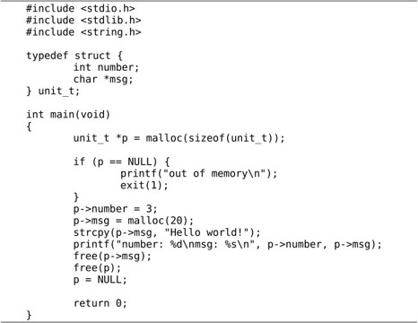
这个程序要注意以下几点：
⦁ unit_t *p = malloc(sizeof(unit_t));这一句，等号右边是void *类型，等号左边是unit_t *类型，编译器会做隐式类型转换，我们讲过void *类型和任何指针类型之间可以相互隐式转换。
⦁ 虽然内存耗尽是很不常见的错误，但写程序要规范，malloc之后应该判断是否成功。以后要学习的大部分系统函数都有成功的返回值和失败的返回值，每次调用系统函数之后都应该判断是否成功。
⦁ free(p);之后，p所指的内存空间是归还了，但是p的值并没有变，因为从free的函数接口来看根本没法改变p的值，p现在指向的内存空间已经不属于用户程序，换句话说，p成了野指针，为避免出现野指针，我们应该在free(p);之后手动置p = NULL;。
⦁ 应该先free(p->msg)，再free(p)，顺序不能颠倒。如果先free(p)，p成了野指针，就不能再访问p->msg了。
上面的例子只有一个简单的顺序控制流程，分配内存，赋值，打印，释放内存，退出程序。这种情况下即使不用free释放内存也可以，因为进程退出时它占用的所有内存都会释放，也就是归还给了操作系统。但如果一个程序长年累月运行（例如网络服务器程序），并且在循环或递归中调用malloc分配内存，则必须有free与之配对，分配一次就要释放一次，否则每次循环都分配内存，分配完了又不释放，就会慢慢耗尽系统内存，这种错误称为内存泄漏（Memory Leak）。另外，malloc返回的指针一定要保存好，只有把它传给free才能释放这块内存，如果这个指针丢失了，就没有办法free这块内存了，也会造成内存泄漏。例如：
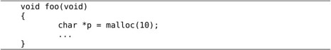
foo函数返回时要释放局部变量p的内存空间，它所指向的内存地址就丢失了，这10个字节也就没法释放了。内存泄漏的Bug很难找到，因为它并不像访问越界一样导致程序运行错误，少量内存泄漏并不影响程序的正确运行，大量的内存泄漏会导致物理内存紧缺，换页频繁，不仅影响当前进程，而且会把整个系统都拖得很慢。
关于malloc和free还有一些特殊情况。malloc(0)这种调用也是合法的，也会返回一个非NULL的指针，这个指针也可以传给free释放，但是不能通过这个指针访问内存。free(NULL)也是合法的，不做任何事情，但是free一个野指针是不合法的，例如先调用malloc返回一个指针p，然后连着调用两次free(p);，则后一次调用会产生运行时错误。
参考文献[3]的8.7节给出了malloc和free的简单实现，基于环形链表。目前读者还没有学习链表，看那段代码会有点困难，我再做一些简化，如图23.1所示，目的是让读者理解malloc和free的工作原理。libc的实现比这要复杂得多，但基本工作原理也是如此。读者只要理解了基本工作原理，就很容易分析在使用malloc和free时遇到的各种Bug。
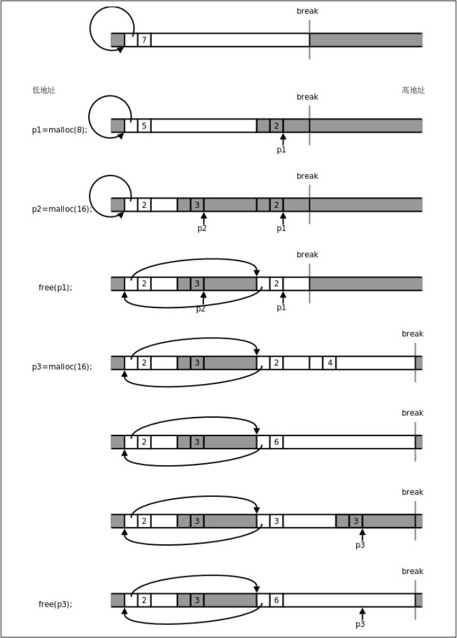
图23.1 简单的malloc和free实现
图23.1中白色背景的框表示malloc管理的空闲内存块，深色背景框不归malloc管，可能是已经分配给用户程序的内存块，也可能还没有映射到当前进程的地址空间，我们讲过Break以上不属于当前进程的地址空间，需要通过brk系统调用向内核申请，由内核分配物理内存映射到进程地址空间，并抬高Break。每个内存块开头都有一个头节点，里面有一个指针字段和一个长度字段，指针字段把所有空闲块的头节点串在一起，组成一个环形链表，长度字段记录着头节点和后面的内存块加起来一共有多长，以8字节为单位（也就是以头节点的长度为单位）。
1.一开始堆空间由一个空闲块组成，长度为7×8=56字节，除头节点之外的长度为48字节。
2．调用malloc分配8个字节，要在这个空闲块的末尾截出16个字节，其中新的头节点占了8个字节，另外8个字节返回给用户使用，注意返回的指针p1指向头节点后面的内存块首地址。
3．再次调用malloc分配16个字节，又在空闲块的末尾截出24个字节，步骤和上一步类似。
4．调用free释放p1所指向的内存块，内存块（包括头节点在内）归还给了malloc，现在malloc管理着两块不连续的内存，用环形链表串起来。注意这时p1成了野指针，指向不属于用户程序的内存空间。由于p1所指向的内存地址在Break之下，是属于当前进程的，所以访问p1时不会出段错误，但在访问p1时这段内存可能已经被malloc再次分配出去了，可能会读到不确定的值，或者意外改写数据。另外注意，此时如果通过p2向右写越界，也不会出段错误，但是会覆盖右边的头节点，从而破坏malloc管理的环形链表，malloc就无法从一个空闲块的指针字段找到下一个空闲块了，找到哪去都不一定，全乱套了。
5．调用malloc分配16个字节，现在虽然有两个空闲块，各有8个字节可分配，但这两块是不连续的，malloc只好通过brk系统调用抬高Break，获得新的内存空间。在参考文献[3]的实现中每次调用sbrk函数向内核申请8KB内存，Linux系统的sbrk函数也是通过brk系统调用实现的，这里为了画图方便，我们假设每次调用sbrk申请32个字节，建立一个新的空闲块。
6．新申请的空闲块和前一个空闲块连续，可以合并成一个。在能合并时要尽量合并，以免空闲块越割越小，无法满足大的内存分配请求。
7．在合并后的这个空闲块末尾截出24个字节，新的头节点占8个字节，另外16个字节返回给用户。
8．调用free(p3)释放这个内存块，由于它和前一个空闲块连续，又重新合并成一个空闲块。注意，Break只能抬高而不能降低，从内核申请到的内存以后都归malloc管了，即使调用free也不会还给内核。
1．编写一个小程序不停地调malloc，让它耗尽系统内存。观察一下，分配了多少内存之后才会出现分配失败？内存耗尽之后会怎么样？会不会死机？
如果函数接口有指针参数，既可以把指针所指向的数据传给函数使用（称为传入参数，如表23.1所示），也可以由函数填充指针所指的内存空间，传回给调用者使用（称为传出参数，如表23.2所示），例如strcpy的src参数是传入参数，dest参数是传出参数。有些函数的指针参数同时充当这两种角色，如select(2)的fd_set*参数，既是传入参数又是传出参数，这称为Value-result参数，如表23.3所示。
表23.1 传入参数示例：void func(const unit_t *p);
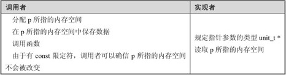
想一想，如果有函数接口void func(const int p);，这里的const写或不写对调用者来说有区别吗？
表23.2 传出参数示例：void func(unit_t *p);
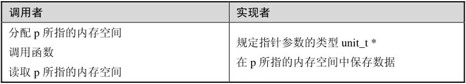
表23.3 Value-result参数示例：void func(unit_t *p);
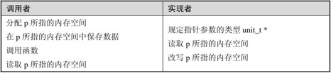
由于传出参数和Value-result参数的函数接口完全相同，应该在文档中说明是哪种参数。以下是一个传出参数的完整例子：
例23.2 传出参数
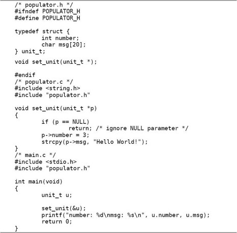
本章的例子都是由多个源文件编译链接成一个程序，请读者自己练习写Makefile。很多系统函数对于指针参数是NULL的情况有特殊规定：如果传入参数是NULL表示取缺省值，例如pthread_create(3)的pthread_attr_t *参数，也可能表示不做特别处理，例如free(3)的参数；如果传出参数是NULL表示调用者不需要传出值，例如time(2)的参数。这些特殊规定应该在文档中写清楚。
两层指针也是指针，同样可以表示传入参数、传出参数或者Value-result参数，只不过该参数所指的内存空间应该解释成指针变量。用两层指针做传出参数的系统函数也很常见，比如pthread_join(3)的void **参数。下面看一个简单的例子。
例23.3 两层指针做传出参数
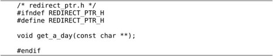
想一想，这里的参数指针是const char **，有const限定符，却不是传入参数而是传出参数，为什么？如果是传入参数应该怎么表示？
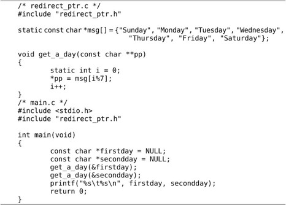
两层指针作为传出参数还有一种特别的用法，可以在函数中分配内存，调用者通过传出参数取得指向该内存的指针，比如getaddrinfo(3)的struct addrinfo **参数。一般来说，实现一个分配内存的函数就要实现一个释放内存的函数，所以getaddrinfo(3)有一个对应的freeaddrinfo(3)函数。
表23.4 通过参数分配内存示例：void alloc_unit(unit_t **pp); void free_unit(unit_t *p);
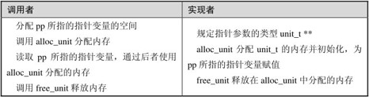
例23.4 通过两层指针参数分配内存
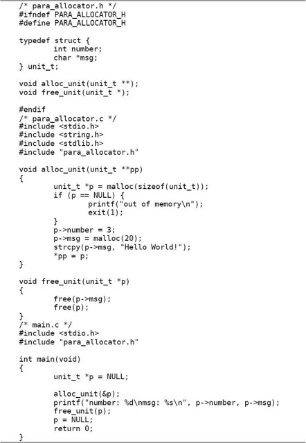
思考一下，为什么在main函数中不能直接调用free(p)释放内存，而要调用free_unit(p)？为什么一层指针的函数接口void alloc_unit(unit_t *p);不能分配内存，而一定要用两层指针的函数接口？
总结一下，两层指针参数如果是传出的，可以有两种情况：第一种情况，传出的指针指向静态内存（比如上面的例子），或者指向已分配的动态内存（比如指向某个链表的节点）；第二种情况是在函数中动态分配内存，然后传出的指针指向这块内存空间，这种情况下调用者应该在使用内存之后调用释放内存的函数，调用者的责任是请求分配和释放内存，实现者的责任是完成分配和释放内存的操作。由于这两种情况的函数接口相同，应该在函数的文档中说明是哪一种情况。
返回值显然是传出的而不是传入的，如果返回值传出的是指针，和上一节通过参数传出指针类似，也分为两种情况：第一种是传出指向静态内存或已分配的动态内存的指针，例如localtime(3)和inet_ntoa(3)，第二种是在函数中动态分配内存并传出指向这块内存的指针，例如malloc(3)和strdup(3)，这种情况通常还要实现一个释放内存的函数，所以有和malloc(3)对应的free(3)函数。由于这两种情况的函数接口相同，应该在函数的文档中说明是哪一种情况。
表23.5 返回指向已分配内存的指针示例：unit_t *func(void);
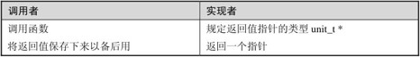
以下是一个完整的例子。
例23.5 返回指向已分配内存的指针
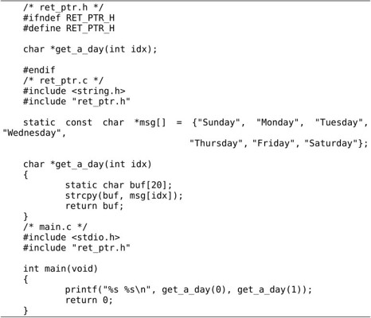
这个程序的运行结果是Sunday Monday吗？请读者自己分析一下。
表23.6 动态分配内存并返回指针示例：unit_t *alloc_unit(void); void free_unit(unit_t *p);
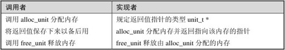
以下是一个完整的例子。
例23.6 动态分配内存并返回指针
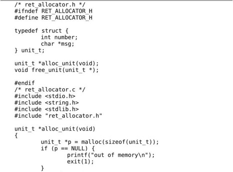
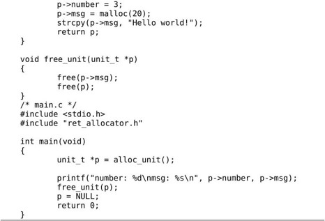
思考一下，通过参数分配内存需要两层的指针，而通过返回值分配内存就只需要返回一层的指针，为什么？
1．跟指针参数或指针返回值有关的函数接口模式肯定不止本章介绍的这几种。比如由调用者分配一段内存，通过指针参数传给实现者，这也算一种模式。请读者自己总结其他模式，并写出示例程序。
如果参数是一个函数指针，调用者可以传递一个函数的地址给实现者，即调用者提供一个函数但自己不去调用它，而是让实现者去调用它，这称为回调函数（Callback Function）。例如qsort(3)和bsearch(3)。
表23.7 回调函数示例：void func(void (*f)(void *), void *p);
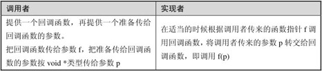
以下是一个简单的例子。实现了一个repeat_three_times函数，可以把调用者传来的任何回调函数重复执行三次。
例23.7 回调函数
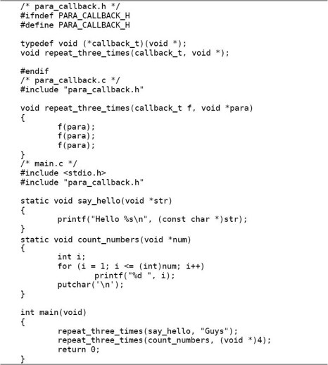
回顾一下前面几节的例子，参数类型都是由实现者规定的。而本例中回调函数的参数按什么类型解释由调用者规定，对于实现者来说就是一个void *指针，实现者只负责将这个指针转交给回调函数，而不关心它到底指向什么数据类型。调用者知道自己传的参数是char *型和int型的，那么在自己提供的回调函数中就应该知道参数要转换成char *型和int型来解释。
回调函数的一个典型应用就是实现类似C++的泛型算法（Generics Algorithm）。下面实现的max函数可以在任意一组对象中找出最大值，可以是一组int、一组char或一组结构体，但是实现者并不知道怎样去比较两个对象的大小，需要调用者再提供一个做比较操作的回调函数。
例23.8 泛型算法
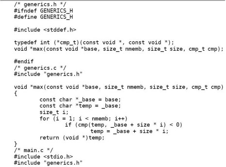
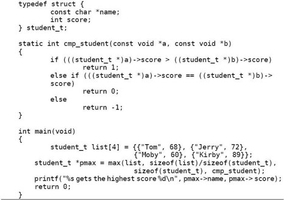
传给max函数的参数是对象数组的基地址、共有多少个对象以及每个对象的大小，max函数可以算出每个对象的首地址，但并不知道对象到底是什么类型，也不必关心它是什么类型，只要把每个对象的首地址转交给比较函数cmp，然后根据比较结果做相应操作即可，cmp是调用者提供的回调函数，调用者当然知道对象是什么类型以及如何比较。
以上举例的回调函数都是被同步调用的，调用者调用max函数，max函数则调用cmp函数，相当于调用者间接调用了自己提供的回调函数。除此之外，异步调用也是回调函数的一种典型用法，调用者首先将回调函数传给实现者，实现者记住这个函数，这称为注册一个回调函数，然后当某个事件发生时实现者再调用先前注册过的函数，比如sigaction(2)注册一个信号处理函数，当信号产生时由操作系统调用该函数进行处理，再比如pthread_create(3)注册一个线程函数，当发生调度时操作系统切换到新注册的线程函数中运行，在GUI编程中异步回调函数更是有普遍的应用，例如为某个按钮注册一个回调函数，当用户单击按钮时调用它。
以下是一个代码框架。
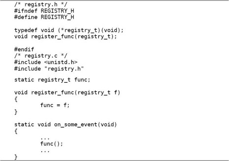
既然参数可以是函数指针，返回值同样也可以是函数指针，因此可以有func()()这样的调用。返回函数指针的函数在C语言中很少见，而在一些函数式编程语言（例如LISP）中返回函数的函数很常见，基本思想是把函数也当做一种数据来操作，可以输入、输出和参与运算，操作函数的函数称为高阶函数（High-order Function）。
1．请仿照本节的例23.8自己实现C标准库的qsort(3)和bsearch(3)函数。
到目前为止我们只见过一个带有可变参数的函数printf：
在下一章还会见到更多这样的函数。现在我们实现一个简单的myprintf函数：
例23.9 用可变参数实现简单的printf函数
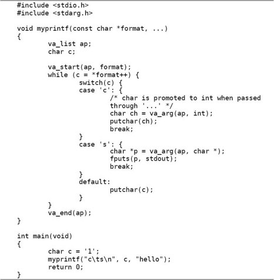
要处理可变参数，需要用到C标准库的va_list类型和va_start、va_arg、va_end宏，这些定义在stdarg.h头文件中。这些宏是如何取出可变参数的呢？我们首先对照反汇编分析在调用myprintf函数时这些参数的内存布局，如图23.2所示。
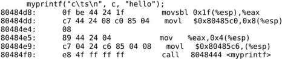
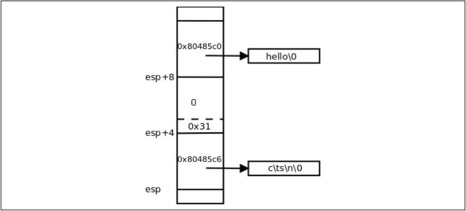
图23.2 myprintf函数的参数布局
这些参数是从右向左依次压栈的，所以第一个参数靠近栈顶，第三个参数靠近栈底。这些参数在内存中是连续存放的，每个参数都对齐到4字节边界。第一个和第三个参数都是指针类型，各占4个字节。第二个参数是char型，只占一个字节，但我们在第14.3.1节讲过Default Argument Promotion规则，这个参数要做Integer Promotion，由char型提升为int型要做符号扩展，所以用movsbl指令。
现在给出一个stdarg.h的简单实现，这个实现出自参考文献[5]第10章：
例23.10 stdarg.h的一种实现
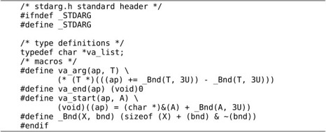
这个头文件中的内部宏定义_Bnd(X, bnd)将类型或变量X的长度对齐到bnd+1字节的整数倍，例如_Bnd(char, 3U)的值是4，_Bnd(int, 3U)也是4。这其实就是第2.5节习题1的整数除法取Ceiling，只不过现在用位运算来做，而不是用+ - * /来做。
在myprintf中定义的va_list ap;其实是一个指针，va_start(ap, format)使ap指向format参数的下一个参数，也就是指向图23.2中esp+4的位置。然后va_arg(ap, int)把第二个参数的值按int型取出来，同时使ap指向第三个参数，也就是指向图23.2中esp+8的位置。然后va_arg(ap, char *)把第三个参数的值按char *型取出来，同时使ap指向更高的地址。va_end(ap)在我们的简单实现中不起任何作用，在有些实现中可能会把ap改写成无效值，C标准要求在同一个函数中va_start和va_end要配对。
如果把myprintf中的char ch = va_arg(ap, int);改成char ch = va_arg(ap, char);，用我们这个stdarg.h的简单实现是没有问题的。但如果改用libc提供的stdarg.h，在编译时会报错：
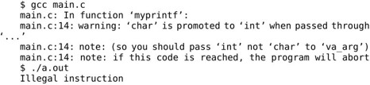
因此要求char型的可变参数必须按int型来取，在调用函数时char型的可变参数已经提升为int型了。
从myprintf的例子可以理解printf的实现原理，printf函数根据第一个参数（格式化字符串）来确定后面有几个参数、分别是什么类型。确保参数的类型、个数与格式化字符串的描述相匹配是调用者的责任，实现者只管按格式化字符串的描述从栈上取参数，如果调用者传递的参数类型或个数不正确，实现者从栈上取到的参数就是错的。
还有一种办法可以确定可变参数的个数，就是在参数列表的末尾传一个Sentinel，例如NULL。execl(3)就采用这种方法确定参数的个数。下面实现一个printlist函数，可以打印若干个传入的字符串。
例23.11 根据Sentinel判断可变参数的个数
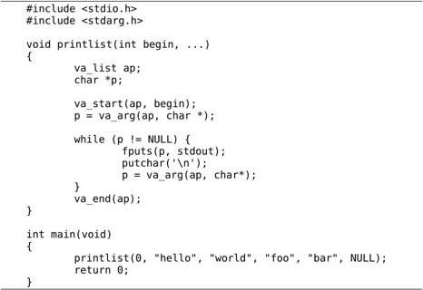
其实printlist函数的第一个参数begin并没有用到，但是这个参数必须写，因为C语言规定可变参数列表的...前面至少要定义一个有名字的参数，要把参数列表中最后一个有名字的参数提供给va_start，这样va_start才能找到可变参数在栈上的位置。实现者应该在文档中说明参数列表必须以NULL结尾，如果调用者不遵守这个约定，函数就会出错。
1．实现一个功能更完整的myprintf，能够处理%c、%s、%d（对应参数是int型，以十进制打印）、%o（对应参数是unsigned int型，以八进制打印）、%x（对应参数是unsigned int型，以十六进制打印）、%f（对应参数是double型，打印到小数点后6位）、%%（打印一个%号）等转换说明，在实现中不许调用printf(3)这个Man Page中描述的任何函数。